Moderating Effect by Multiple Regression
Shu Fai Cheung & Sing-Hang Cheung
2026-08-27
Source:vignettes/articles/mo_lm.Rmd
mo_lm.RmdIntroduction
This article is part of a series of brief illustrations of how to use
cond_effects() from the package manymome (Cheung & Cheung, 2024) to estimate the
conditional effects when the model parameters are estimated by ordinary
least squares (OLS) multiple regression using lm(). For
moderated mediation tested by OLS regression, please refer to this article.
(Articles in this series had duplicated sections to make each of them self-contained.)
Data Set and Model
This is the sample data set used for illustration:
library(manymome)
dat <- data_mod_2w
print(head(dat), digits = 3)
#> y x w1 w2 c1 c2
#> 1 3.85 5.00 6.11 4.22 3.82 7.80
#> 2 6.58 6.75 6.20 2.98 7.09 5.47
#> 3 4.89 5.29 5.82 5.20 4.98 6.70
#> 4 8.06 6.79 6.95 4.21 5.97 5.31
#> 5 7.50 6.88 7.01 5.70 6.20 5.67
#> 6 5.92 5.63 9.45 4.75 4.78 6.39This dataset has 6 variables:
one outcome variable (
y),one predictor (
x),two moderators (
w1,w2),two control variables (
c1andc2).
We will start with a model with only one moderator.
One Moderator
Suppose this is the model being fitted, with control variables omitted from the plot for readability:
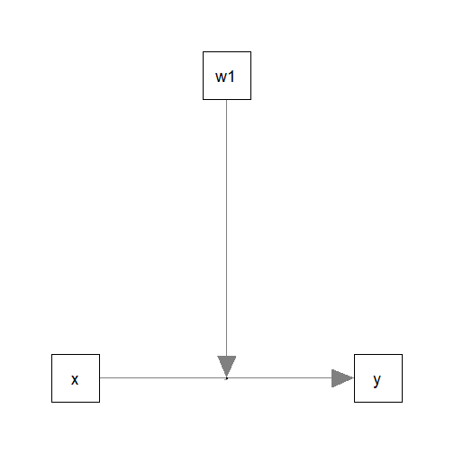
Fit by Regression
The path parameters can be estimated by multiple regression using
lm():
lm_y_w1 <- lm(
y ~ w1*x + c1 + c2,
data = dat
)These are the estimates of the regression coefficients of the paths:
summary(lm_y_w1)
#>
#> Call:
#> lm(formula = y ~ w1 * x + c1 + c2, data = dat)
#>
#> Residuals:
#> Min 1Q Median 3Q Max
#> -2.29074 -0.62350 -0.05257 0.64493 2.60438
#>
#> Coefficients:
#> Estimate Std. Error t value Pr(>|t|)
#> (Intercept) 6.14284 3.32593 1.847 0.066277 .
#> w1 -0.52086 0.46251 -1.126 0.261486
#> x -0.95008 0.60613 -1.567 0.118636
#> c1 0.08857 0.06496 1.363 0.174331
#> c2 0.18836 0.05498 3.426 0.000747 ***
#> w1:x 0.18154 0.08380 2.166 0.031508 *
#> ---
#> Signif. codes: 0 '***' 0.001 '**' 0.01 '*' 0.05 '.' 0.1 ' ' 1
#>
#> Residual standard error: 0.9566 on 194 degrees of freedom
#> Multiple R-squared: 0.3322, Adjusted R-squared: 0.315
#> F-statistic: 19.3 on 5 and 194 DF, p-value: 1.41e-15Conditional Effects
We can now use cond_effects() to estimate the effect of
x on y for different levels of the moderator
(w1).
Suppose we want to estimate the effect from x to
y, conditional on w1:
(Refer to vignette("manymome") and the help page of
cond_effects() on the arguments.)
out_xy_on_w1 <- cond_effects(
wlevels = "w1",
x = "x",
y = "y",
fit = lm_y_w1
)
out_xy_on_w1
#>
#> == Conditional effects ==
#>
#> Path: x -> y
#> Conditional on moderator(s): w1
#> Moderator(s) represented by: w1
#>
#> [w1] (w1) ind SE Stat pvalue Sig CI.lo CI.hi
#> 1 M+1.0SD 7.942 0.492 0.101 4.853 0.000 *** 0.292 0.692
#> 2 Mean 6.878 0.299 0.082 3.643 0.000 *** 0.137 0.460
#> 3 M-1.0SD 5.813 0.105 0.138 0.762 0.447 -0.167 0.378
#>
#> - [SE] are regression standard errors.
#> - [Stat] are the t statistics used to test the effects.
#> - [pvalue] are p-values computed from 'Stat'.
#> - [Sig]: 0 '***' 0.001 '**' 0.01 '*' 0.05 ' ' 1.
#> - [CI.lo to CI.hi] are 95.0% confidence interval computed from
#> regression standard errors.
#> - The 'ind' column shows the conditional effects.
#> The column ind shows the effects of x on
y for different levels of w1.
When w1 is one standard deviation below the mean, the
effect of x1 is 0.105, with a 95% confidence interval
[-0.167, 0.378].
When w1 is one standard deviation above the mean, the
effect of x1 is 0.492, with a 95% confidence interval
[0.292, 0.692].
NOTE: The standard error (SE) and related results are
computed using the pick-a-point approach by Rogosa (1980).
Plotting the Conditional Effects
Conventional Plot
The output of cond_effects() has a plot
method for plotting the conditional effects (also called simple
effects):
plot(out_xy_on_w1)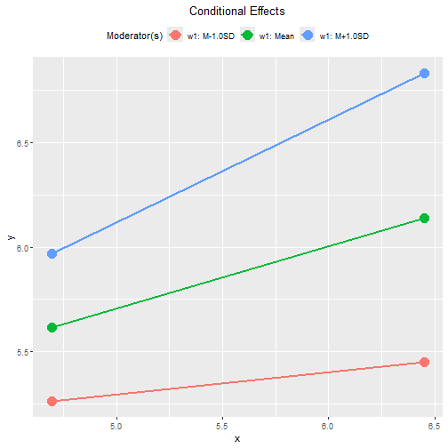
By default, the lines span the range of one standard deviation below
and above the mean of the x variable.
The plot can be customized in a lot of ways. Please refer to the help
page of plot.cond_indirect_effects() for available
options.
Tumble Plot
If the distribution of the x variable may vary for
different levels of the moderators, a version of tumble graph
proposed by Bodner (2016) can be plotted
by adding graph_type = "tumble":
plot(out_xy_on_w1,
graph_type = "tumble")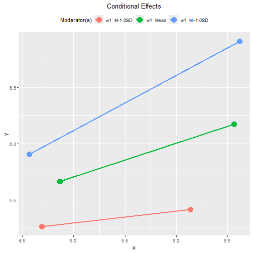
In this example, the distribution of the predictor varies slightly as the level of the moderator changes:
lower with a smaller variation when
w1is one standard deviation below its mean, andhigher with a larger variation when
w1is one standard deviation above its mean.
Therefore, the tumble graph is a better way to visualize the
moderating effect of w1.
Standardized Conditional Effects
Although OLS can be used to estimate and test the unstandardized effects, it is inappropriate for forming the confidence intervals for the standardized effects. See Yuan & Chan (2011) on the issue of standardized regression coefficients.
To form nonparametric bootstrap confidence intervals for effects to
be computed, add boot_ci = TRUE, R to the
number of bootstrap samples (should be 5000 or even 10000, for multiple
regression), and seed (set it to an integer to ensure the
results are reproducible).
The standardized conditional effect from x to
y conditional on w1 can be estimated by
setting standardized_x and standardized_y to
TRUE.
std_xy_on_w1 <- cond_effects(
wlevels = "w1",
x = "x",
y = "y",
fit = lm_y_w1,
boot_ci = TRUE,
R = 5000,
seed = 54532,
standardized_x = TRUE,
standardized_y = TRUE
)
#> 19 processes started to run bootstrapping.
std_xy_on_w1
#>
#> == Conditional effects ==
#>
#> Path: x -> y
#> Conditional on moderator(s): w1
#> Moderator(s) represented by: w1
#>
#> [w1] (w1) std CI.lo CI.hi Sig ind
#> 1 M+1.0SD 7.942 0.374 0.204 0.518 Sig 0.492
#> 2 Mean 6.878 0.227 0.094 0.352 Sig 0.299
#> 3 M-1.0SD 5.813 0.080 -0.136 0.280 0.105
#>
#> - [CI.lo to CI.hi] are 95.0% percentile confidence intervals by
#> nonparametric bootstrapping with 5000 samples.
#> - std: The standardized conditional effects.
#> - ind: The unstandardized conditional effects.
#> When w1 is one standard deviation below its mean, the
standardized effect is 0.080, with a 95% confidence interval [-0.136,
0.280].
When w is one standard deviation above its mean, the
standardized effect is 0.374, with a 95% confidence interval [0.204,
0.518].
Plot Standardized Conditional Effects
The plot() method can also be used on the standardized
conditional effects, although the only differences are the values
displayed on the axes:
plot(std_xy_on_w1)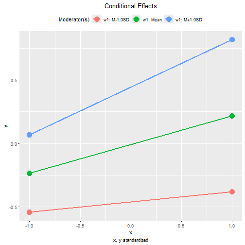
This is the tumble graph:
plot(std_xy_on_w1,
graph_type = "tumble")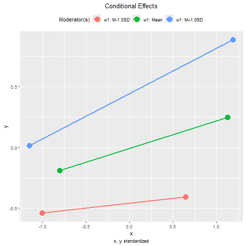
Two Moderators
Suppose we would like to examine the moderating effects of two
moderators, w1 and w2, on the effect of
x on y. This is the model being fitted, with
control variables omitted from the plot for readability:
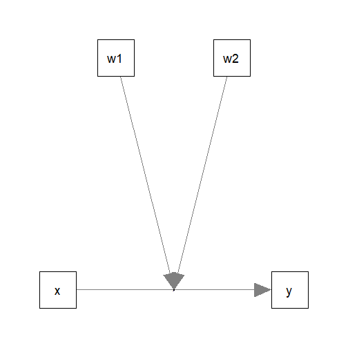
The path parameters can be estimated by the following multiple regression model:
lm_y_w1w2 <- lm(
y ~ x*w1 + x*w2 + c1 + c2,
data = dat
)These are the estimates of the regression coefficients of the paths:
summary(lm_y_w1w2)
#>
#> Call:
#> lm(formula = y ~ x * w1 + x * w2 + c1 + c2, data = dat)
#>
#> Residuals:
#> Min 1Q Median 3Q Max
#> -2.29403 -0.65294 -0.01277 0.64934 2.58194
#>
#> Coefficients:
#> Estimate Std. Error t value Pr(>|t|)
#> (Intercept) 6.88344 3.64126 1.890 0.060210 .
#> x -1.17277 0.66638 -1.760 0.080015 .
#> w1 -0.57214 0.46589 -1.228 0.220932
#> w2 -0.08857 0.49859 -0.178 0.859190
#> c1 0.08432 0.06481 1.301 0.194794
#> c2 0.19407 0.05509 3.523 0.000534 ***
#> x:w1 0.19117 0.08432 2.267 0.024482 *
#> x:w2 0.03787 0.08633 0.439 0.661378
#> ---
#> Signif. codes: 0 '***' 0.001 '**' 0.01 '*' 0.05 '.' 0.1 ' ' 1
#>
#> Residual standard error: 0.9529 on 192 degrees of freedom
#> Multiple R-squared: 0.3442, Adjusted R-squared: 0.3203
#> F-statistic: 14.4 on 7 and 192 DF, p-value: 5.341e-15Although w2 does not significantly moderate the effect
of x, we still proceed to examine its moderating effect,
just for illustration.
Conditional Effects
The function cond_effects() can be used again, even with
two moderators:
out_xy_on_w1w2 <- cond_effects(
wlevels = c("w1", "w2"),
x = "x",
y = "y",
fit = lm_y_w1w2
)
out_xy_on_w1w2
#>
#> == Conditional effects ==
#>
#> Path: x -> y
#> Conditional on moderator(s): w1, w2
#> Moderator(s) represented by: w1, w2
#>
#> [w1] [w2] (w1) (w2) ind SE Stat pvalue Sig CI.lo CI.hi
#> 1 M+1.0SD M+1.0SD 7.942 4.829 0.528 0.122 4.343 0.000 *** 0.288 0.768
#> 2 M+1.0SD M-1.0SD 7.942 2.897 0.455 0.141 3.220 0.002 ** 0.176 0.734
#> 3 M-1.0SD M+1.0SD 5.813 4.829 0.121 0.163 0.744 0.458 -0.201 0.444
#> 4 M-1.0SD M-1.0SD 5.813 2.897 0.048 0.159 0.303 0.762 -0.266 0.363
#>
#> - [SE] are regression standard errors.
#> - [Stat] are the t statistics used to test the effects.
#> - [pvalue] are p-values computed from 'Stat'.
#> - [Sig]: 0 '***' 0.001 '**' 0.01 '*' 0.05 ' ' 1.
#> - [CI.lo to CI.hi] are 95.0% confidence interval computed from
#> regression standard errors.
#> - The 'ind' column shows the conditional effects.
#> The column ind shows the effects of x on
y for different levels of w1 and
w2.
IMPORTANT: Even though this model does not have three-way
interaction, the conditional effects still need to consider
both moderators. It is because the effect of x
depends on all moderators, whether there is a higher-order
interaction or not.
If one or more moderators are omitted, a warning message will be issued. This is an example:
cond_effects(
wlevels = "w1",
x = "x",
y = "y",
fit = lm_y_w1w2
)
#> Warning in (function (xi, yi, yiname, digits = 3, y, wvalues = NULL, warn =
#> TRUE, : w2 modelled as moderator(s) for the path from y~x to y but not included
#> in 'wvalues'. They will be set to zero in computing the conditional effect,
#> which may not be meaningful. Please check.
#> Warning in (function (xi, yi, yiname, digits = 3, y, wvalues = NULL, warn =
#> TRUE, : w2 modelled as moderator(s) for the path from y~x to y but not included
#> in 'wvalues'. They will be set to zero in computing the conditional effect,
#> which may not be meaningful. Please check.
#> Warning in (function (xi, yi, yiname, digits = 3, y, wvalues = NULL, warn =
#> TRUE, : w2 modelled as moderator(s) for the path from y~x to y but not included
#> in 'wvalues'. They will be set to zero in computing the conditional effect,
#> which may not be meaningful. Please check.
#>
#> == Conditional effects ==
#>
#> Path: x -> y
#> Conditional on moderator(s): w1
#> Moderator(s) represented by: w1
#>
#> [w1] (w1) ind SE Stat pvalue Sig CI.lo CI.hi
#> 1 M+1.0SD 7.942 0.346 0.363 0.951 0.343 -0.371 1.062
#> 2 Mean 6.878 0.142 0.349 0.407 0.684 -0.546 0.831
#> 3 M-1.0SD 5.813 -0.061 0.357 -0.172 0.864 -0.766 0.643
#>
#> - [SE] are regression standard errors.
#> - [Stat] are the t statistics used to test the effects.
#> - [pvalue] are p-values computed from 'Stat'.
#> - [Sig]: 0 '***' 0.001 '**' 0.01 '*' 0.05 ' ' 1.
#> - [CI.lo to CI.hi] are 95.0% confidence interval computed from
#> regression standard errors.
#> - The 'ind' column shows the conditional effects.
#> Plotting the Conditional Effects
Conventional Plots
The plot() method can be used directly even with two
moderators:
plot(out_xy_on_w1w2)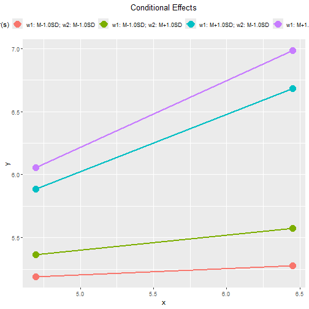
This plot is not easy to read when the model has two or more
moderators. The argument facet_grid_cols can be used to
generate one plot for each level of one of the moderators, presented in
one row, side-by-side.
For example, suppose we would like to generate one graph for each
level of w2, we add
facet_grid_cols = "w2":
plot(out_xy_on_w1w2,
facet_grid_cols = "w2")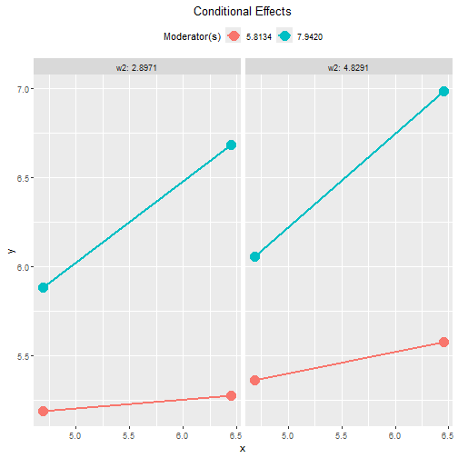
We can do the same for w1:
plot(out_xy_on_w1w2,
facet_grid_cols = "w1")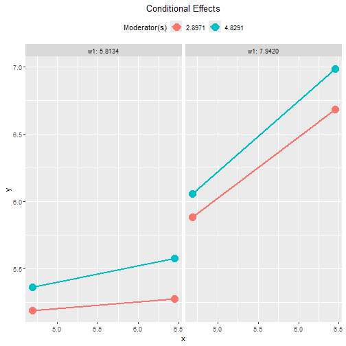
Tumble Plots
We can also use graph_type = "tumble" to generate tumble
graphs:
plot(out_xy_on_w1w2,
facet_grid_cols = "w2",
graph_type = "tumble")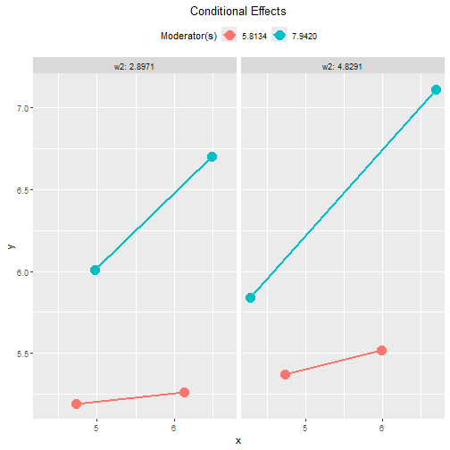
We can do the same for w1:
plot(out_xy_on_w1w2,
facet_grid_cols = "w1",
graph_type = "tumble")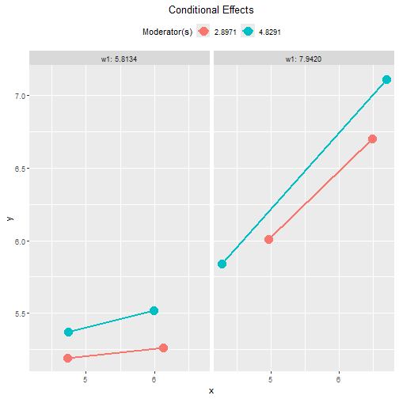
Standardized Conditional Effects
The standardized conditional effect from x to
y conditional on w1 and w2 can be
estimated by setting standardized_x and
standardized_y to TRUE, with bootstrap
confidence intervals:
std_xy_on_w1w2 <- cond_effects(
wlevels = c("w1", "w2"),
x = "x",
y = "y",
fit = lm_y_w1w2,
boot_ci = TRUE,
R = 5000,
seed = 54532,
standardized_x = TRUE,
standardized_y = TRUE
)
#> 19 processes started to run bootstrapping.
std_xy_on_w1w2
#>
#> == Conditional effects ==
#>
#> Path: x -> y
#> Conditional on moderator(s): w1, w2
#> Moderator(s) represented by: w1, w2
#>
#> [w1] [w2] (w1) (w2) std CI.lo CI.hi Sig ind
#> 1 M+1.0SD M+1.0SD 7.942 4.829 0.402 0.203 0.560 Sig 0.528
#> 2 M+1.0SD M-1.0SD 7.942 2.897 0.346 0.143 0.586 Sig 0.455
#> 3 M-1.0SD M+1.0SD 5.813 4.829 0.092 -0.169 0.323 0.121
#> 4 M-1.0SD M-1.0SD 5.813 2.897 0.037 -0.210 0.264 0.048
#>
#> - [CI.lo to CI.hi] are 95.0% percentile confidence intervals by
#> nonparametric bootstrapping with 5000 samples.
#> - std: The standardized conditional effects.
#> - ind: The unstandardized conditional effects.
#> The plot() method can also be used on the standardized
conditional effects:
plot(std_xy_on_w1w2,
facet_grid_cols = "w2")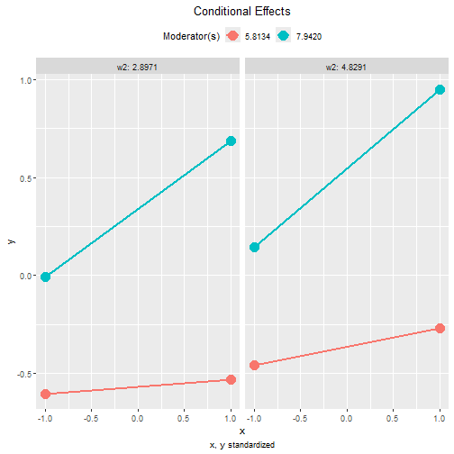
plot(std_xy_on_w1w2,
facet_grid_cols = "w1")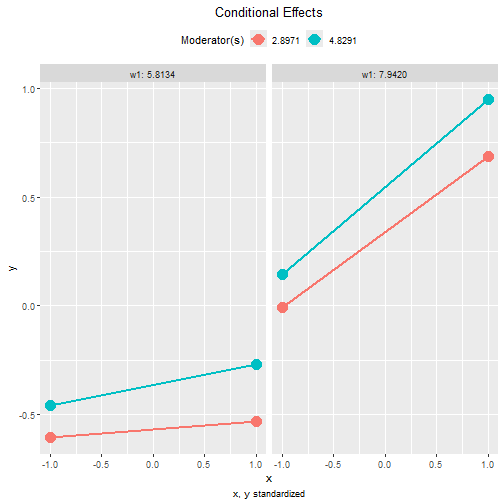
These are the tumble graphs:
plot(std_xy_on_w1w2,
facet_grid_cols = "w2",
graph_type = "tumble")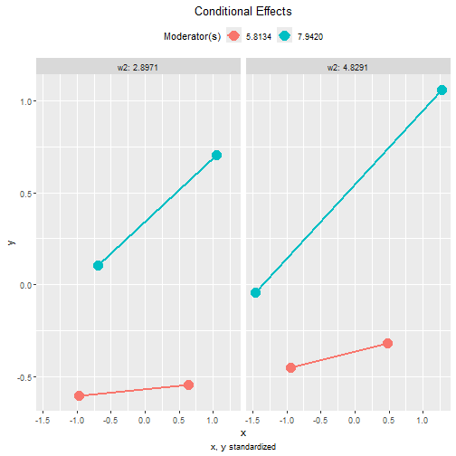
plot(std_xy_on_w1w2,
facet_grid_cols = "w1",
graph_type = "tumble")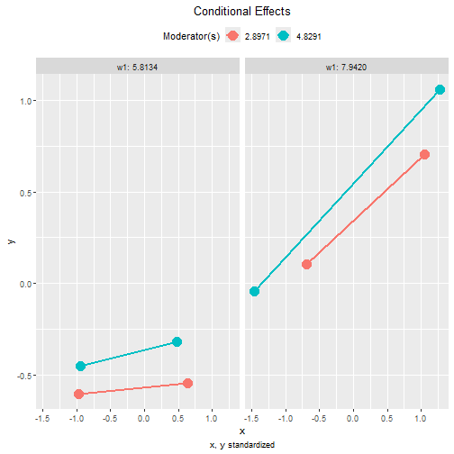
Two Moderators, with Three-Way Interaction
Suppose that we suspect that the two moderators interact with each
other. That is, the moderating effect of w1 on the effect
of x may not be the same for different levels of
w2, or the moderating effect of w2 on the
effect of x may depend on the level of w1.
The steps demonstrated above can also be used in this regression model:
lm_y_w1_x_w2 <- lm(
y ~ w1*w2*x + c1 + c2,
data = dat
)These are the estimates of the regression coefficients of this model:
summary(lm_y_w1_x_w2)
#>
#> Call:
#> lm(formula = y ~ w1 * w2 * x + c1 + c2, data = dat)
#>
#> Residuals:
#> Min 1Q Median 3Q Max
#> -2.27658 -0.63668 -0.03106 0.61117 2.55406
#>
#> Coefficients:
#> Estimate Std. Error t value Pr(>|t|)
#> (Intercept) -23.46400 14.16783 -1.656 0.09934 .
#> w1 3.68387 1.98858 1.853 0.06550 .
#> w2 7.85339 3.63294 2.162 0.03189 *
#> x 4.46108 2.56813 1.737 0.08399 .
#> c1 0.08359 0.06427 1.301 0.19500
#> c2 0.19658 0.05465 3.597 0.00041 ***
#> w1:w2 -1.11035 0.50635 -2.193 0.02953 *
#> w1:x -0.59907 0.35889 -1.669 0.09672 .
#> w2:x -1.43247 0.65486 -2.187 0.02993 *
#> w1:w2:x 0.20562 0.09102 2.259 0.02501 *
#> ---
#> Signif. codes: 0 '***' 0.001 '**' 0.01 '*' 0.05 '.' 0.1 ' ' 1
#>
#> Residual standard error: 0.9449 on 190 degrees of freedom
#> Multiple R-squared: 0.3618, Adjusted R-squared: 0.3316
#> F-statistic: 11.97 on 9 and 190 DF, p-value: 7.009e-15The significant three-way interaction term, w1:w2:x,
suggests that, although w2 does not moderate the effect of
x on y, it does moderate the moderating effect
of w1.
Conditional Effects
The function cond_effects() can be used in exactly the
same way, whether the moderators interact with each other or not:
out_xy_on_w1_x_w2 <- cond_effects(
wlevels = c("w1", "w2"),
x = "x",
y = "y",
fit = lm_y_w1_x_w2
)
out_xy_on_w1_x_w2
#>
#> == Conditional effects ==
#>
#> Path: x -> y
#> Conditional on moderator(s): w1, w2
#> Moderator(s) represented by: w1, w2
#>
#> [w1] [w2] (w1) (w2) ind SE Stat pvalue Sig CI.lo CI.hi
#> 1 M+1.0SD M+1.0SD 7.942 4.829 0.672 0.137 4.903 0.000 *** 0.402 0.942
#> 2 M+1.0SD M-1.0SD 7.942 2.897 0.284 0.161 1.768 0.079 -0.033 0.602
#> 3 M-1.0SD M+1.0SD 5.813 4.829 -0.167 0.207 -0.806 0.421 -0.574 0.241
#> 4 M-1.0SD M-1.0SD 5.813 2.897 0.292 0.191 1.530 0.128 -0.084 0.667
#>
#> - [SE] are regression standard errors.
#> - [Stat] are the t statistics used to test the effects.
#> - [pvalue] are p-values computed from 'Stat'.
#> - [Sig]: 0 '***' 0.001 '**' 0.01 '*' 0.05 ' ' 1.
#> - [CI.lo to CI.hi] are 95.0% confidence interval computed from
#> regression standard errors.
#> - The 'ind' column shows the conditional effects.
#> As shown above, among the levels examined, x has a
significant effect on y only when both w1 and
w2 are one standard deviation above their means.
Plotting the Conditional Effects
These are the tumble plots of the conditional effects, with
facet_grid_cols set:
plot(out_xy_on_w1_x_w2,
facet_grid_cols = "w2",
graph_type = "tumble")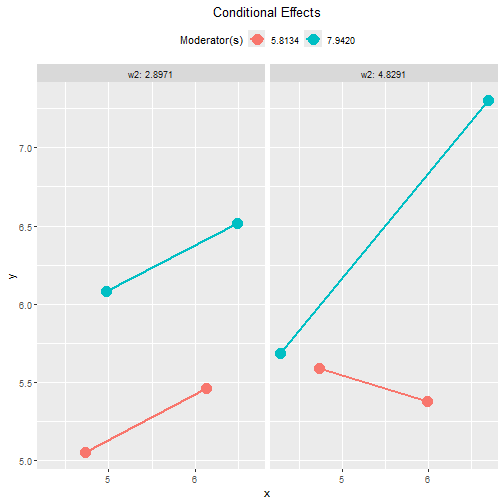
plot(out_xy_on_w1_x_w2,
facet_grid_cols = "w1",
graph_type = "tumble")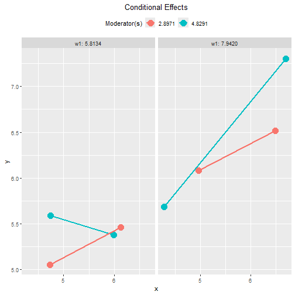
Standardized Conditional Effects
This is the output of the standardized conditional effects, with bootstrap confidence intervals:
std_xy_on_w1_x_w2 <- cond_effects(
wlevels = c("w1", "w2"),
x = "x",
y = "y",
fit = lm_y_w1_x_w2,
boot_ci = TRUE,
R = 5000,
seed = 54532,
standardized_x = TRUE,
standardized_y = TRUE
)
#> 19 processes started to run bootstrapping.
std_xy_on_w1_x_w2
#>
#> == Conditional effects ==
#>
#> Path: x -> y
#> Conditional on moderator(s): w1, w2
#> Moderator(s) represented by: w1, w2
#>
#> [w1] [w2] (w1) (w2) std CI.lo CI.hi Sig ind
#> 1 M+1.0SD M+1.0SD 7.942 4.829 0.511 0.360 0.760 Sig 0.672
#> 2 M+1.0SD M-1.0SD 7.942 2.897 0.216 -0.015 0.456 0.284
#> 3 M-1.0SD M+1.0SD 5.813 4.829 -0.127 -0.462 0.177 -0.167
#> 4 M-1.0SD M-1.0SD 5.813 2.897 0.222 -0.062 0.501 0.292
#>
#> - [CI.lo to CI.hi] are 95.0% percentile confidence intervals by
#> nonparametric bootstrapping with 5000 samples.
#> - std: The standardized conditional effects.
#> - ind: The unstandardized conditional effects.
#> The plot() method can also be used on the standardized
conditional effects, in the presence of three-way interaction:
plot(std_xy_on_w1_x_w2,
facet_grid_cols = "w2",
graph_type = "tumble")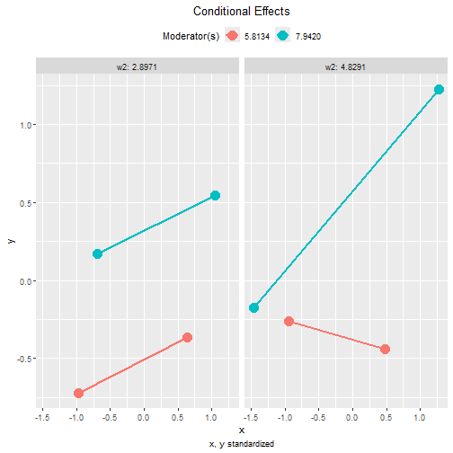
plot(std_xy_on_w1_x_w2,
facet_grid_cols = "w1",
graph_type = "tumble")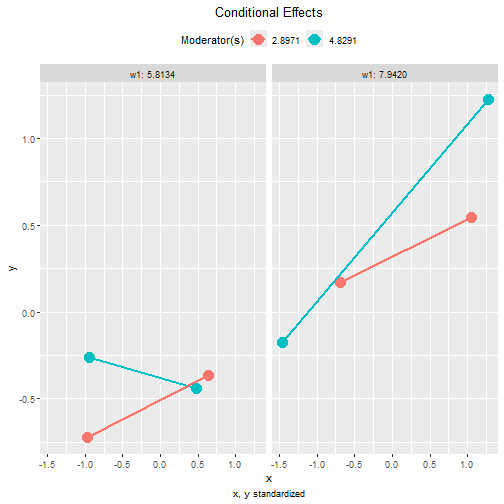
Other Moderated Regression Models
The function cond_effects() has no limit on the number
of moderators and the number of predictors with their effects
moderated.
The demonstrations of other moderated regression models can be found in the list of articles.
The levels for the moderators are controlled by
mod_levels() and related functions in the same way whether
a model is fitted by lavaan::sem() or lm().
Please refer to other articles (e.g., vignette("manymome")
and vignette("mod_levels")) on how to estimate effects in
other models analyzed by multiple regression.